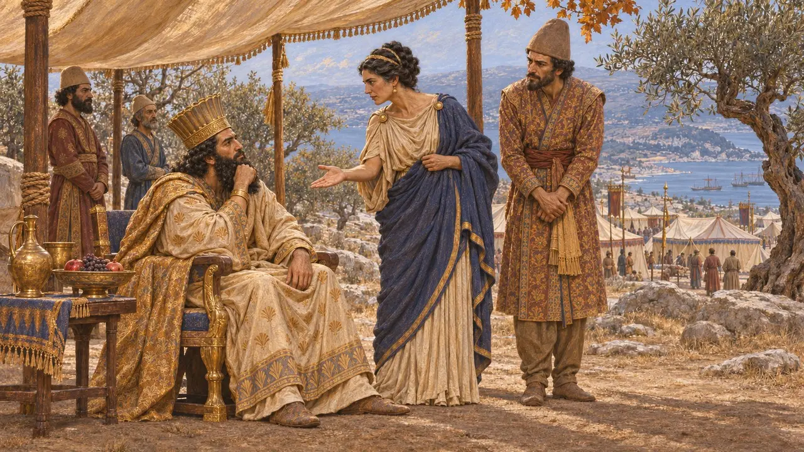
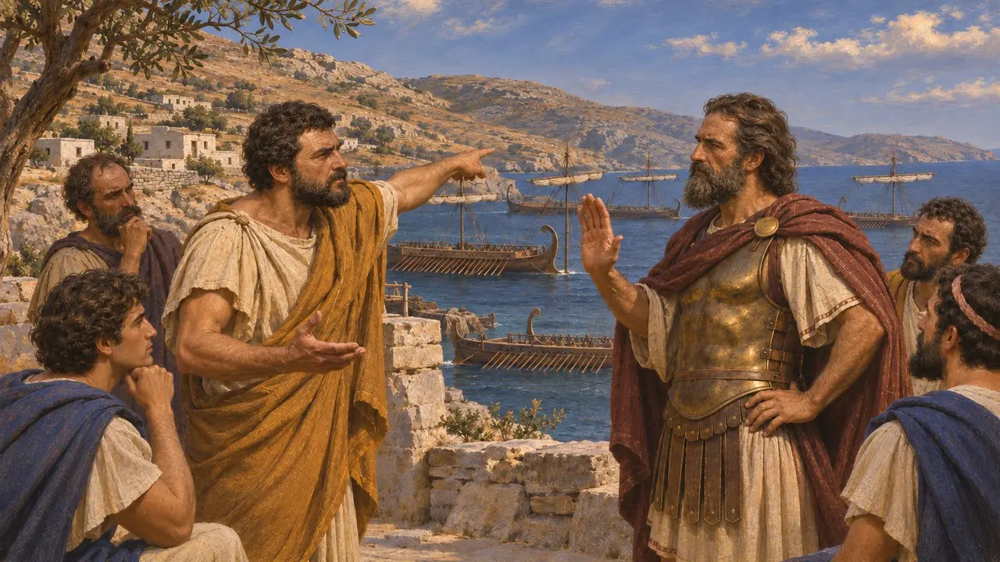
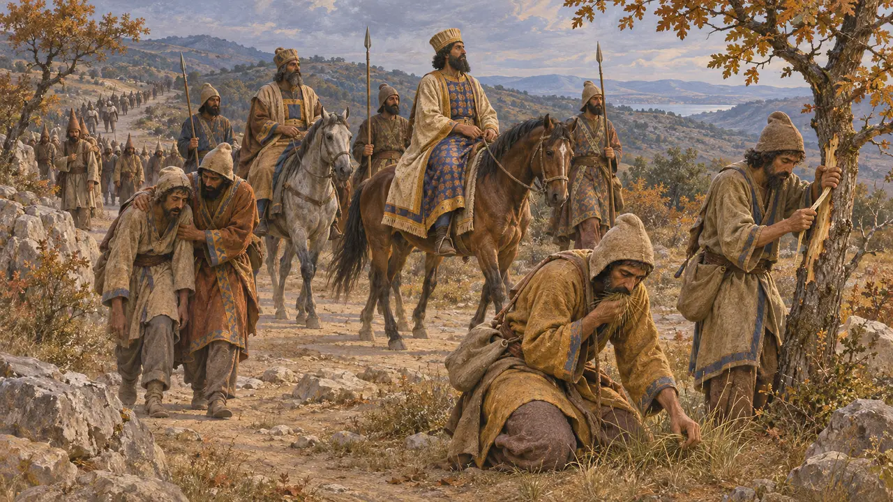
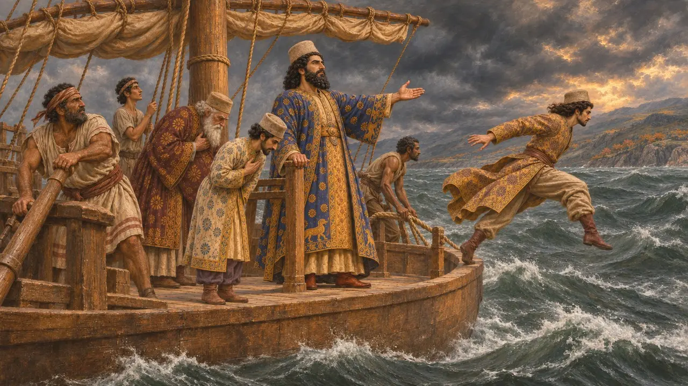
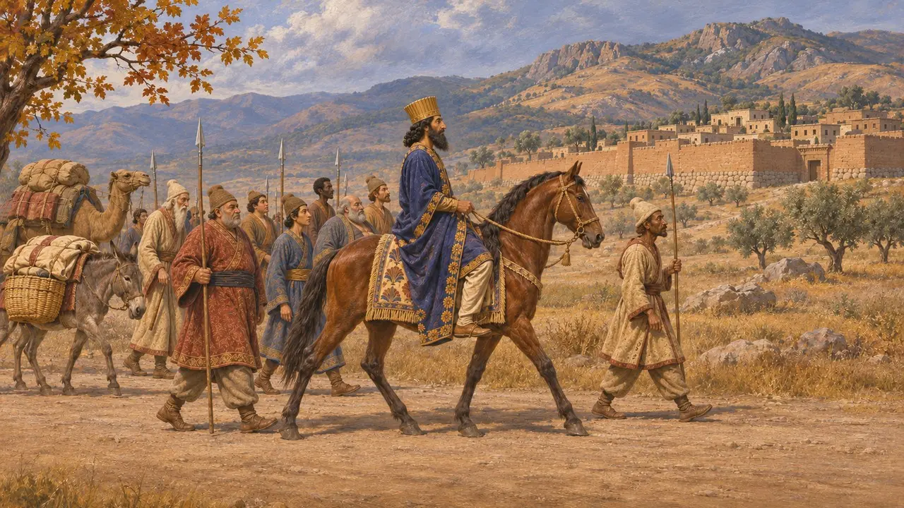

بازگشت خشایارشا به آسیا
عقبنشینی شاه از یونان به سارد پس از شکست در سالامیس، پاییز 480 پ.م.
در بازی: مرحلهٔ ۱۱: فرجام
خشایارشا پس از شکست ناوگانش در سالامیس در سپتامبر 480، بخشی از سپاه را به هلسپونت بازگرداند، به آسیا گذشت و تا سال 479 در سارد ماند. او مردونیه را با سپاهی برگزیده در یونان گذاشت تا جنگ را به پایان ببرد. نویسندگان یونانی این بازگشت را همچون گریزی خفتبار روایت کردند و هیچ متن پارسی آن را وصف نمیکند.
در بازی: گاهنامه یادآور میشود که شاه در 480 به خانه بازگشت و مردونیه با سپاهیان گزیده ماند تا زمستان را در تسالی بگذراند. هرودوت میگوید سپاه زمستان را در تسالی و مقدونیه گذراند.

پیشنهاد مردونیه و رأی آرتمیسیا
روایت باستانیهرودوت میگوید مردونیه، از بیم آنکه او را مقصر جنگ بدانند، خشایارشا را برانگیخت که به وطن بازگردد و 300,000 مرد گزیده برای فتح یونان به او واگذارد. شاه از آرتمیسیای هالیکارناسی نظرش را پرسید و او گفت بپذیرد. اگر مردونیه پیروز شود، اعتبارش از آنِ شاه خواهد بود؛ و اگر شکست خورد، زیانی اندک است، چون خشایارشا و خاندانش در اماناند. هرودوت میافزاید که خشایارشا از پندی که با ترس خودش همخوان بود شادمان شد.
Herodotus 8.100-103

تمیستوکلس و پلها
مورد مناقشههرودوت میگوید ناوگان یونانی پارسیان را تا آندروس تعقیب کرد. آنجا تمیستوکلس پیشنهاد کرد به سوی هلسپونت بروند و پلها را بشکنند، اما اوریبیادس اسپارتی نپذیرفت و گفت شاهِ به دامافتاده از شاهِ گریزان خطرناکتر است. تمیستوکلس آنگاه پیامی نهانی نزد خشایارشا فرستاد و خود را در بازداشتن یونانیان صاحب اعتبار نشان داد. پلوتارک آریستیدس را مخالف آن پیشنهاد مینامد و پیام را تهدیدی میداند که برای شتاب دادن به رفتن خشایارشا فرستاده شد؛ مورخان تردید دارند که این پیام در نقشههای او اثری گذاشته باشد.
Herodotus 8.108-110; Plutarch, Themistocles 16

لشکرکشی به هلسپونت
روایت باستانیهرودوت میگوید مردونیه سپاهیانش را در تسالی برگزید، از جمله جاویدانان، سوارهنظام پارسی، مادها، سکاییان، باختریان و هندیان، و آرتاباز شاه را همراهی کرد. در راهپیمایی 45 روزه به سوی هلسپونت، گرسنگی و اسهال خونی بر سپاه افتاد و مردان علف و پوست درخت خوردند. طوفانها پیشتر پلها را شکسته بود، از این رو سپاه با کشتی به آبیدوس گذشت. «پارسیان» اثر آیسخولوس، که در سال 472 به صحنه آمد، فاجعهای دیگر بر استریمونِ یخزده میافزاید.
Herodotus 8.113-117, 8.126; Aeschylus, Persians

حکایت سفر دریایی از ایون
افسانهٔ متأخرهرودوت همچنین داستانی شنید که خشایارشا سپاه را در ایون کنار استریمون ترک کرد و با کشتی فنیقی به خانه بازگشت. در طوفان، ناخدا گفت کشتی باید سبک شود، پس بزرگان پارسی روی عرشه در برابر شاه تعظیم کردند و خود را به دریا افکندند. هرودوت این حکایت را رد میکند و میگوید خشایارشا پارسیان را به زیر عرشه میفرستاد و بهجای آنان پاروزنان فنیقی را به دریا میانداخت. او میافزاید که مردم آبدرا گذشتن شاه را از راه خشکی به یاد داشتند.
Herodotus 8.118-120

گریز یا عقبنشینی از پیشبرنامهریزیشده
مورد مناقشهمنابع یونانی بازگشت را وحشتزدگی مینمایانند. بسیاری از تاریخنگاران امروزی، از جمله بریان، آن را گزینشی سنجیده میدانند: پس از سالامیس ناوگان دیگر نمیتوانست سپاهی بسیار بزرگ را تأمین کند و جای شاه در قلب امپراتوریاش بود. نیرویی کوچکتر به فرماندهی مردونیه ماند تا دستاوردها را نگه دارد، و هرودوت خشایارشا را تا پس از میکاله در 479 پ.م. در سارد جای میدهد. بیشتر تاریخنگاران بر این باورند که رقم 300,000 هرودوت برای سپاه مردونیه بسیار گزاف است.
P. Briant, From Cyrus to Alexander, 2002; Herodotus 9.108
منابع
- Herodotus 8.100-120, 8.126, 9.108
- Aeschylus, Persians
- Plutarch, Themistocles 16
- Diodorus 11.19
- P. Briant, From Cyrus to Alexander, 2002